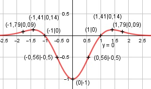

Aufgabe 144 f(x) = (x2 - 1) * e-x2 Produktregel erste Ableitung: u = x2 - 1, u' = 2x v = e-x2 Kettenregel: v' = - 2x * e-x2 f'(x) = 2x * e-x2 + (-2x) * e-x2 * (x2 - 1) f'(x) = e-x2 * (-2x3 + 4x) Produktregel zweite Ableitung: u = e-x2 Kettenregel: u' = -2x * e-x2 v = -2x3 + 4x, v' = -6x2 + 4 f''(x) = -2x*e-x2 * (-2x3 + 4x) + (-6x2 + 4)*e-x2 f''(x) = e-x2 * (4x4 - 8x2 - 6x2 + 4) f''(x) = e-x2 * (4x4 - 14x2 + 4) 4x4 - 14x2 + 4 f''(x) = ---------------- ex2 Zur Beurteilung, ob f'''(x) ≠ 0: (Begründung siehe Aufgabe 105) u = 4x4 - 14x2 + 4, u' = 16x3 - 28x u' 16x3 - 28x f'''(x) = --- = ------------- ≠ 0 v ex2 für alle x ≠ 0, ± 1,32, weil 16x3 - 28x = 0 16x * (x2 - 1,75) = 0 16x = 0 |.16 x1 = 0 x2 - 1,75 = 0 |+1,75 x2 = 1,75 |√ x2,3 = ± 1,32 Definitionsbereich: -∞ < x < ∞ Waagerechte Asymptote: x2 - 1 f(x) = (x2 - 1) * e-x2 = -------- ex2 geht gegen 0 für x --> ± ∞ Wertebereich: f(x) wird dann am größten, wenn x ± 1,41 (Extrempunkt) f(1,41) = 0,14, und am kleinsten, wenn x = 0, f(0) = -1 --> -1 ≤ f(x) ≤ 0,14 Symmetrie zur y-Achse bzw. zum Punkt (0|0): f(-x) = ((-x)2 - 1) * e-(-x)2 f(-x) = (x2 - 1) * e-x2 = f(x) --> Achsensymmetrie -f(-x) = -(x2 - 1) * e-x2 ≠ f(x) --> keine Punktsymmetrie Nullstellen: f(x) = 0 (x2 - 1) * e-x2 = 0 |:e-x2 x2 - 1 = 0 |+1 x2 = 1 |ⱱ x1,2 = ± 1 N1(1|0), N2(-1|0) Schnittpunkt mit der y-Achse: x = 0 f(0) = (02 - 1) * e-02 = -1 Sy(0|-1) Extrempunkte: f'(x) = 0 e-x2 * (-2x3 + 4x) = 0 |:e-x2 2x * (-x2 + 2) = 0 2x = 0|:2 x1 = 0, f(0) = -1 -x2 + 2 = 0 |+x2 x2 = 2 |ⱱ x2,3 = ± 1,41 x2 = 1,41, f(1,41) = (1,412 - 1)*e-1,412 = 0,14 = f(-1,41) f''(0) = e-02 * (4 * 04 - 14 * 02 + 4) > 0 --> Tiefpunkt (0|-1) f''(1,41) = e-1,412 * (4*1,414 - 14*1,41 + 4) < 0 --> Hochpunkt (1,41|0,14) Wegen Symmetrie: Hochpunkt (-1,41|0,14) Wendepunkte: f''(0) = 0 e-x2 * (4x4 - 14x2 + 4) = 0 |:e-x2 4x4 - 14x2 + 4 = 0 Substitution x2 = z 4z2 - 14z + 4 = 0 A, B, C - Formel: A = 4, B = -14, C = 4 z1,2 = z1,2 = z1,2 = 14 ± 11,49 z1,2 = ------------- 8 z1 = 3,19 --> x1,22 = 3,19 |ⱱ --> x1,2 = ± 1,79 z2 = 0,31 --> x3,42 = 0,31 |ⱱ --> x3,4 = ± 0,56 x1 = 1,79, f(1,79) = (1,792 - 1) * e-1,792 = 0,04 --> WP1(1,79|0,09) Wegen Symmetrie --> WP2(-1,79|0,09) x2 = 0,56, f(0,56) = (0,562 - 1) * e-0,562 = 0,19 --> WP3(0,56|-0,5) Wegen Symmetrie --> WP4(-0,56|-0,5) Graph:
